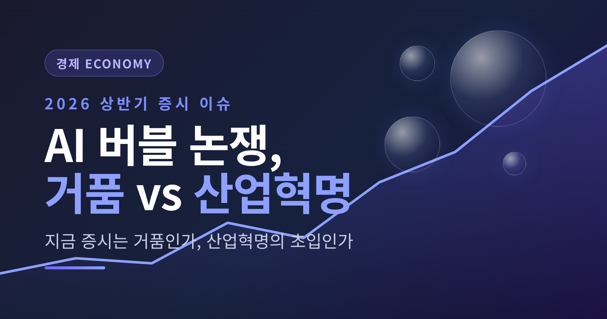
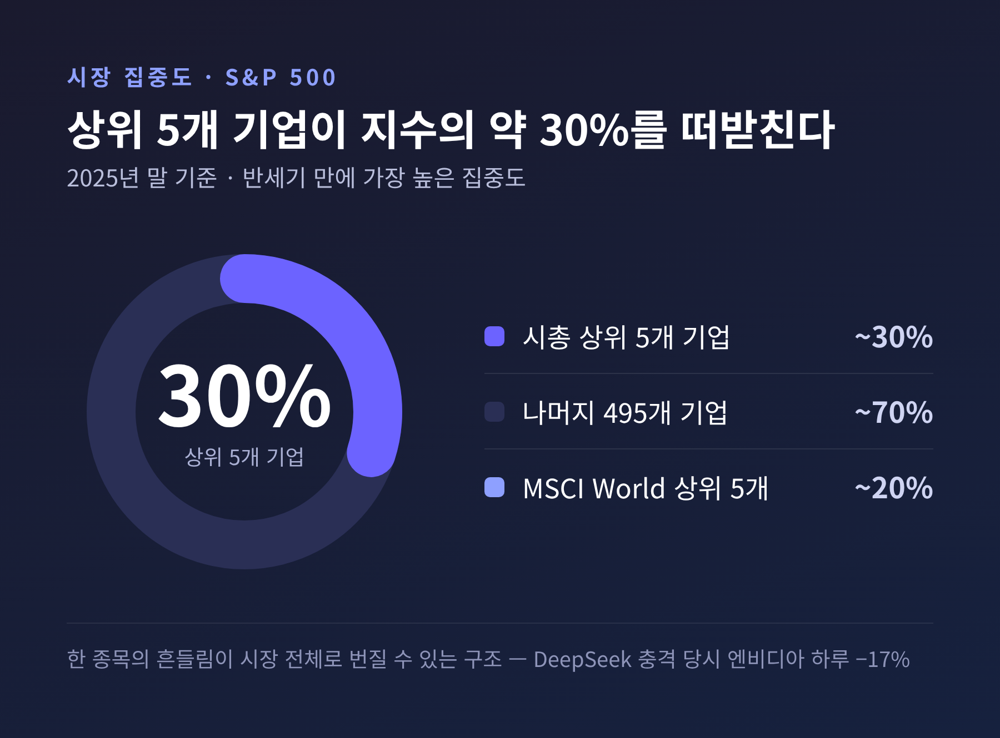
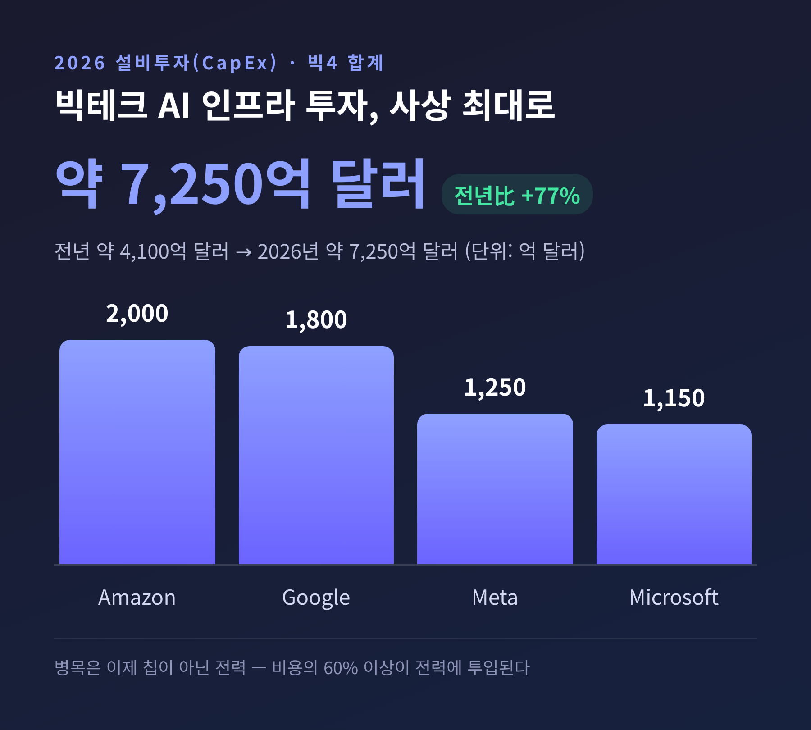
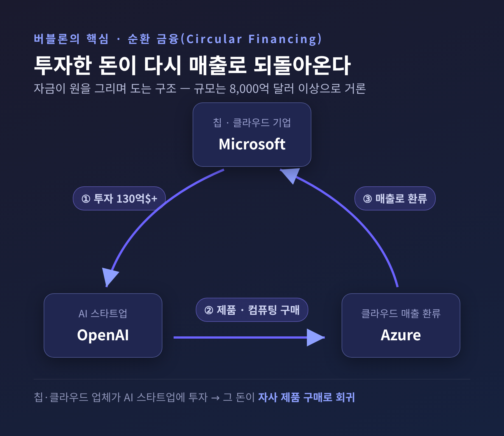
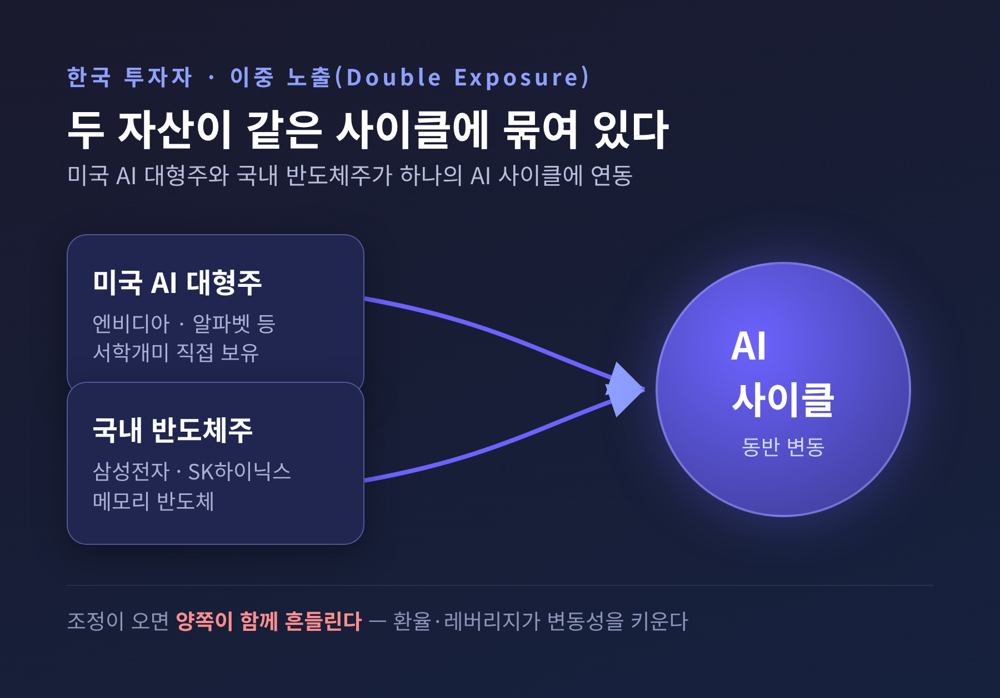

AI 버블 논쟁 정리 — 지금 증시는 거품인가, 산업혁명의 초입인가

이번 글에서는 2026년 상반기 증시를 달구고 있는 'AI 버블 논쟁'을 정리해 보겠습니다.
먼저 결론부터 짧게 말씀드립니다. 지금 시장에는 거품을 경고하는 목소리와 산업혁명의 초입이라는 낙관이 함께 있습니다. 어느 한쪽이 명백히 옳다고 단정하기 어려운 국면입니다. 그래서 이 글은 결론을 내려드리기보다, 양쪽의 근거를 나란히 놓고 스스로 판단하실 수 있도록 돕는 데 목적을 둡니다.
본 글은 정보 제공을 위한 정리이며, 특정 종목이나 자산에 대한 투자 권유가 아닙니다.
왜 지금 '버블' 논쟁이 불붙었나
논쟁의 출발점은 시장의 쏠림입니다.
2025년 말 기준으로 S&P500 지수의 약 30%, MSCI World 지수의 약 20%가 시가총액 상위 5개 기업에 의해 지탱됐습니다. 반세기 만에 가장 높은 집중도라는 평가가 따라붙었습니다.
여기에 선도 AI 기업들이 서로 투자금을 주고받는 '순환 투자' 구조가 주가를 인위적으로 부풀린다는 우려가 더해졌습니다.
규모도 가파릅니다. 2026년 2월 OpenAI는 사상 최대인 1,100억 달러 펀딩을 마감했습니다. 프리머니 기업가치는 7,300억 달러로 평가됐습니다. Anthropic은 3,800억 달러 가치에 300억 달러를 조달했고, Databricks의 가치는 1,340억 달러로 두 배 이상 뛰었습니다.
쏠린 시장은 충격에도 약합니다. DeepSeek 발표 충격 당시 엔비디아 주가가 하루 17%, 시가총액 약 6,000억 달러어치가 빠진 적이 있습니다. 한 종목의 흔들림이 시장 전체로 번질 수 있다는 신호였습니다.

돈은 얼마나 들어가고 있나 — 사상 최대의 설비투자
규모를 보면 이 흐름이 왜 주목받는지 짐작됩니다.
Google·Amazon·Microsoft·Meta, 이른바 빅4의 2026년 설비투자 합계는 약 7,250억 달러로 전망됩니다. 전년 약 4,100억 달러보다 약 77% 늘어난 수치입니다.
회사별로 보면 Amazon이 약 2,000억 달러, Google이 1,750~1,850억 달러, Meta가 1,150~1,350억 달러, Microsoft가 1,100~1,200억 달러 규모입니다.
물론 합산 추정치는 소스마다 다릅니다. 약 6,000억에서 7,250억 달러까지 편차가 있습니다. 다만 방향성은 한결같습니다 — "전년 대비 대폭 증가, 사상 최대 규모"라는 점입니다.
흥미로운 변화도 있습니다. 예전엔 병목이 칩이었습니다. 지금은 전력입니다. 빅테크는 비용의 60% 이상을 칩이 아닌 전력에 쓰고 있으며, 막대한 투자를 하고도 수요를 따라가지 못한다고 밝힙니다.

거품론의 핵심 — '본전'은 나오는가
거품을 우려하는 쪽이 가장 날카롭게 찌르는 지점은 수익성입니다.
한 분석은 현재의 지출이 경제적으로 정당화되려면 AI 매출이 2030년까지 2조 달러로 성장해야 한다고 봅니다. 이 격차가 지출 둔화나 매출 실망, 마진 압박 중 하나로 귀결될 수 있다는 경고입니다.
순환 금융의 규모는 8,000억 달러를 넘는다고 거론됩니다. 칩·클라우드 업체가 AI 스타트업에 투자하면, 그 돈이 곧바로 자사 제품 구매로 되돌아오는 구조입니다. Microsoft가 OpenAI에 130억 달러 이상을 투자하면서 동시에 핵심 클라우드 공급자로서 그 지출을 Azure 매출로 환류받는 사례가 대표적입니다.
OpenAI의 재무도 자주 인용됩니다. 매출은 2023년 20억 달러에서 2025년 200억 달러로 급성장했습니다. 그러나 2026년에는 약 140억 달러 손실이 전망됩니다. 컴퓨팅 비용이 매출을 크게 웃도는 구조입니다.
기업 현장의 성과도 아직 분명치 않습니다. MIT 연구에서는 기업의 약 95%가 생성형 AI 투자로 측정 가능한 ROI를 보지 못했다고 보고했습니다. 2026년 2월 NBER 연구에서도 기업의 90%가 AI의 생산성 영향이 없다고 응답했습니다.

낙관론의 반박 — '이번엔 다르다'
반대편의 논리도 만만치 않습니다.
연준 의장 파월은 오늘의 AI 기업은 실제 매출을 내며, 데이터센터 투자가 광범위한 경제성장에 기여한다고 봅니다. 매출이 미미했던 닷컴 시절과 구분되는 지점입니다.
매출 가속도 근거로 제시됩니다. Anthropic의 연환산 매출은 두 달 만에 140억에서 300억 달러로 두 배가 됐습니다. OpenAI도 2025년 말 약 200억 달러 수준에 이르렀습니다.
대표주의 펀더멘털도 거론됩니다. 엔비디아는 2026년 3월 기준 시가총액 약 4.45조 달러로, FY2026 매출 약 2,159억 달러, 순이익률 약 53%를 기록했습니다. 적자 기업이 주가를 끌던 닷컴과는 다른 체력이라는 평가입니다.
투자 거물의 시각도 있습니다. 빌 애크먼은 AI를 "산업 규모의 생산성 붐"이라 평하며, 막대한 설비투자를 '규모의 승자가 보상받는 군비경쟁'으로 해석했습니다.
다만 한 가지는 짚어둘 필요가 있습니다. 생산성 향상을 보여주는 일부 사례는 이해관계가 있는 기업이 발간한 자료에서 나온 것이라, 해석에는 신중함이 필요합니다.
닷컴버블과 비교하면 — 같은가, 다른가
가장 자주 나오는 비교는 1999~2000년 닷컴버블입니다. 표로 정리하면 차이가 또렷합니다.
| 비교 항목 | 닷컴버블 (1999~2000) | 현재 AI (2026) |
|---|---|---|
| 나스닥100 선행 P/E | 약 60배 (2000년 3월) | 약 26배 (2026년 2월) |
| 대표주 펀더멘털 | 적자 다수, 현금흐름 미미 | 대형주는 실제 막대한 이익(순이익률 50%대) |
| 자금 성격 | '열망'에 자본 투입 | 현금 많은 기업이 인프라에 자기자본 투입 |
| 시장 집중도 | 밸류에이션이 이익 기여 초과 | 집중은 더 높으나 이익 기여도 큼 |
'다르다'는 쪽은 밸류에이션이 닷컴 정점보다 훨씬 온건하고, 대형주에 실제 실적이 있다는 점을 듭니다.
'더 위험하다'는 쪽은 절대 투자 규모와 시총 집중도가 닷컴을 능가하며, 순환 금융 같은 자금 환류가 거품 지표를 울린다고 봅니다.
다수 분석의 결론은 양면적입니다. "1999년의 정확한 재현은 아니다. 그러나 밸류에이션과 자금 조달 패턴은 점점 거품적 환경을 닮아간다." 한쪽 손을 들어주지 않는 신중한 평가입니다.
한국 투자자에게는 어떤 의미인가
이 논쟁은 국내 투자자에게도 남의 일이 아닙니다.
2026년 5월 5일 기준 서학개미의 미국주식 보유액은 약 1,841.5억 달러, 우리 돈으로 약 267조 원에 이르러 역대 최고를 기록했습니다. 종목으로는 테슬라가 여전히 1위지만 연초보다 줄었고, 알파벳은 37.3% 늘며 흐름의 변화를 보였습니다.
국내 사정도 함께 봐야 합니다. AI·반도체 초대형주로의 쏠림, 신용융자 급증, 단일종목 레버리지 ETF 집중이 2026년 상반기의 특징입니다. 퇴직연금 적립금이 500조 원 돌파를 앞두고 '저축에서 투자로'의 전환이 진행 중이라, 가계 노후자금이 증시 변동성에 더 크게 노출되는 구조이기도 합니다.
소스들이 공통적으로 짚는 리스크 요인을 정리하면 이렇습니다.
- 이중 노출: 미국 AI 대형주 직접 보유와 국내 메모리 반도체주가 같은 AI 사이클에 연동돼, 조정 시 양쪽이 함께 흔들릴 수 있습니다.
- 환율 변수: 해외주식 보유가 사상 최대인 만큼 원/달러 환율이 평가손익에 직접 영향을 줍니다.
- 레버리지 주의: 단일종목 레버리지 ETF와 신용융자 확대는 조정 국면에서 손실을 키웁니다. IMF와 영란은행도 '급격한 조정' 가능성을 경고한 바 있습니다.

다시 강조하지만, 위 내용은 자료들이 제시한 리스크를 정리한 것일 뿐, 특정 행동을 권하는 자문이 아닙니다.
정리하면 이렇습니다.
거품론은 쏠림과 순환 금융, 입증되지 않은 수익성을 가리킵니다. 낙관론은 실제 매출과 자기자본, 온건한 밸류에이션을 가리킵니다. 같은 시장을 보면서도 읽어내는 풍경이 이토록 다릅니다.
그래서 지금 필요한 것은 한쪽으로 기우는 확신이 아니라, 양쪽을 함께 보는 시야인지도 모릅니다.
— "거품인가 혁명인가"라는 질문에 당장 답하기보다, 내가 감내할 수 있는 손실의 범위부터 점검해 보는 일. 결국 자료들이 한목소리로 권하는 것은 그 한 가지였습니다.